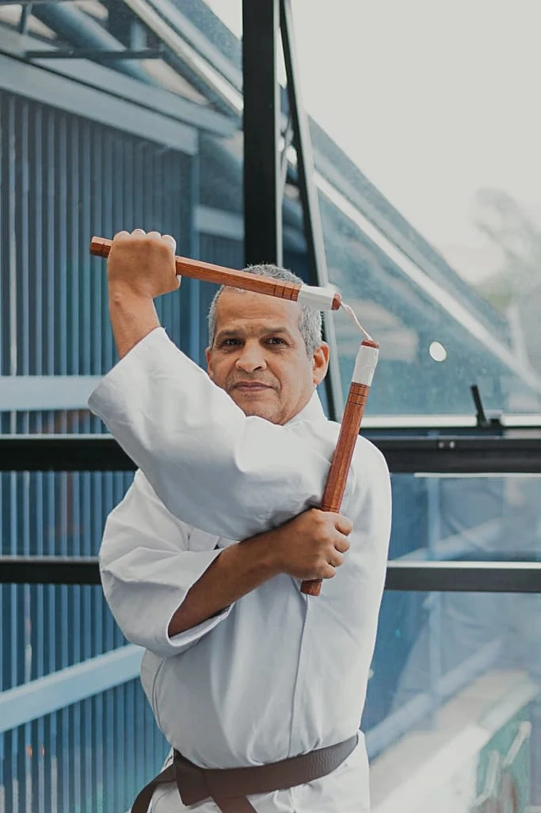

Karate
Karatê Shotokan
Aulas de karate para adultos e crianças. Técnica, formas e prática com orientação.
 COBRAS AKAIDOJO
COBRAS AKAIDOJOATIVIDADES
Explore as atividades da Cobras Akai. Para conhecer os horários e a proposta de cada turma, converse com a equipe.
DEZ FORMAS DE SE MOVIMENTAR
Conheça as propostas da academia. A disponibilidade de cada turma e seus horários são combinados com a equipe.
Karate
Aulas de karate para adultos e crianças. Técnica, formas e prática com orientação.
Karate
Uma tradição do karate criada por Seiken Shukumine, com seu próprio repertório de prática.
Fitness
Movimentos de lutas baseados no karate, acompanhados por música.
Fitness
Proposta que reúne princípios do pilates, força e alongamento.
Lutas
Atividade de luta que inclui socos de boxe. Conheça com a equipe a dinâmica específica das aulas.
Lutas
Uma das modalidades de luta da academia. Consulte a proposta da turma e a orientação para começar.
Fitness
Um espaço dedicado ao trabalho de alongamento, com orientação durante a prática.
Fitness
Treino organizado em circuito, com diferentes estações de exercícios.
Lutas
Prática com armas, conforme a atividade apresentada pela academia. Consulte quais materiais fazem parte das aulas.
Individual
Aulas individuais, personalizadas e adaptadas aos objetivos de cada aluno.
A PRÁTICA EM IMAGENS

Retrato recebido para o acervo da academia.
道SEU PRIMEIRO PASSO
Conte qual atividade chamou sua atenção e consulte as turmas e os horários.